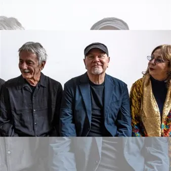

mar 10 nov · dalle 20:00
Note nuove 2026 - Fabio Zappetella 4ET featuring Marcotulli Tavolazzi Gatto
10 novembre 2026 ore 20.00 – Teatro San Giorgio Fabio Zeppetella chitarra Rita Marcotulli pianoforte Ares Tavolazzi contrabbasso Roberto Gatto batteria Il progetto nasce dalla collaborazione tra il chitarrista Fabio Zeppetella e la pianista Rita Marcotulli e riunisce quattro…
 Indicazioni
Indicazioni
- Costi e prenotazioni
- Costo non indicato · Prenotazione non indicata
- Programma
- Programma da verificare. Apri la fonte ufficiale per orari e possibili aggiornamenti.
- In caso di maltempo
- Nessuna indicazione specifica pubblicata.
- Note
- Acquisito automaticamente dalla fonte.
L’EVENTO
Descrizione completa
Fabio Zeppetella chitarra
Rita Marcotulli pianoforte
Ares Tavolazzi contrabbasso
Roberto Gatto batteria Il progetto nasce dalla collaborazione tra il chitarrista Fabio Zeppetella e la pianista Rita Marcotulli e riunisce quattro straordinari protagonisti della scena jazz italiana.
Il repertorio è interamente composto da brani originali firmati da Fabio Zeppetella, nei quali una solida matrice jazzistica si intreccia con il lirismo che da sempre caratterizza la sua scrittura. Le composizioni riflettono un linguaggio aperto e personale, capace di accogliere influenze provenienti dal jazz, dalla musica classica e dalla world music, dando vita a un’esperienza sonora intensa e ricca di sfumature.
A completare il quartetto sono due autentici maestri del jazz italiano: il contrabbassista Ares Tavolazzi , già al fianco di Zeppetella nel suo primo album del 1995, registrato insieme a Kenny Wheeler, e il batterista Roberto Gatto , con il quale il chitarrista ha condiviso negli anni numerose collaborazioni discografiche e concertistiche.
Melodia, poesia e groove rappresentano gli elementi distintivi di questo progetto. L’interplay tra i musicisti, l’energia della pulsazione ritmica e la libertà espressiva dell’improvvisazione restituiscono tutta la vitalità e la freschezza del grande jazz contemporaneo, in un dialogo costante tra tradizione e ricerca. Biglietti in vendita presso le rivendite autorizzate e su Vivaticket Per informazioni: 0432 1720214 / tickets@euritmica.it
IL PROGRAMMA
Programma e orari
Appuntamenti raccolti dalle fonti elencate. Dove manca un orario, non è ancora disponibile in questa scheda.
Programma pubblicato
- Dal 2026-11-10 al 2026-11-10
INFORMAZIONI UTILI
Prima di partire
- Controllare la fonte prima di partire.
ORGANIZZAZIONE